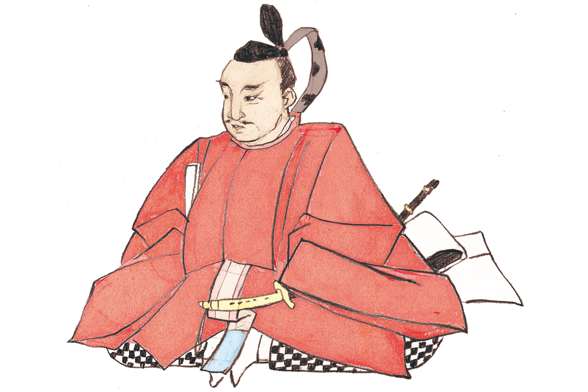

Префектура Гифу · Мино · история
Орибэ Фурута: самурай, который научил керамику быть кривой

Орибэ Фурута служил самым могущественным полководцам своего времени, но запомнился совсем другим. Его вкус в чайной церемонии был таким дерзким, что по нему назвали целый стиль керамики, и родился этот стиль в его родной провинции Мино.
Эпоха
Век войн
С конца XV до конца XVI века Япония жила в непрерывной войне. Власть сёгунов Муромати окончательно рухнула, и вместо назначенных ими наместников по всей стране усилились местные военные правители, даймё. Этот период называют Сэнгоку, «эпохой воюющих провинций», и многие его полководцы до сих пор остаются в Японии легендой.
Орибэ Фурута стоит среди них особняком. Его настоящее имя Сигэнари Фурута, а в юности его звали Кагэясу. Он родился в 1544 году (есть и другие версии) в провинции Мино, на юге нынешней префектуры Гифу. Женой его стала Сэн, дочь Сигэкиё Накагавы и сестра полководца Киёхидэ Накагавы (1542–1583).
Биография
Воин, который ушёл в чай
Фурута служил Нобунаге Оде (1534–1582), полководцу, который начал объединять раздробленную Японию, а потом его преемнику Хидэёси Тоётоми (1537–1598). И всё же как воин он известен куда меньше, чем как человек культуры.
Чайной церемонии он учился у Сэн-но Рикю (1522–1591), великого мастера чая, который довёл до совершенства скромный стиль ваби. Фуруту причисляли к «семи мудрецам Рикю», семи лучшим его ученикам. Страсть к чаю у него была необыкновенная. Рассказывают, что во время осады Осаки он забыл о сражении и ушёл в бамбуковую рощу искать материал для тясяку, бамбуковой ложечки для чая.
Без «вкуса Орибэ», «Орибэ-гономи», невозможно говорить о культуре эпохи Момояма. Орибэ взял стиль, созданный Рикю, и сделал его гораздо свободнее. Это касалось и устройства чайных комнат, и самой церемонии: возникла школа «Орибэ-рю», которая существует и сегодня.
В родной Мино под его руководством родилась керамика Орибэ, которую узнают по причудливым, нарочито неправильным формам. Учеников у него было много. Среди них второй сёгун Хидэтада Токугава (1579–1632), мастер чая и создатель садов Энсю Кобори (1579–1647), художник и керамист Коэцу Хонъами (1558–1637).
Эстетика
Красота нарушенной гармонии
Вкус Орибэ был новым и смелым. Безупречной правильности он предпочитал то, что в Японии называют «хатё-но би», красотой нарушенного ритма. Бывало, что он нарочно разбивал сосуд, склеивал осколки и считал готовой работой именно эту искажённую форму. По меркам своего времени это был настоящий авангард.
Хроника
Жизнь Орибэ по годам
- 1544. Родился в провинции Мино (есть и другие версии).
- 1567. Нобунага Ода занял Мино, и Фурута поступил к нему на службу посыльным офицером, передававшим приказы на поле боя.
- 1569. Женился на Сэн, сестре Киёхидэ Накагавы, владельца замка Ибараки в провинции Сэтцу.
- 1576. Стал управляющим поместьем в провинции Ямасиро, недалеко от Киото.
- 1577. Отличился как посыльный при осаде замка в провинции Харима, которую вёл старший сын Нобунаги, Нобутада Ода (1557–1582). В том же году против Нобунаги поднял мятеж его вассал Мурасигэ Араки (1535–1586), и Фуруте удалось вернуть Киёхидэ Накагаву на сторону Оды.
- 1582. Примерно в это время, по-видимому, познакомился с Сэн-но Рикю и стал его учеником.
- 1583. Участвовал в атаке на замок Камэяма в провинции Исэ, которым владел Кадзумасу Такигава (1525–1586), и отличился в том же году в битве при Сидзугатакэ.
- 1585. Вместе с полководцем Хидэмасой Хори (1553–1590) ходил в походы на Кии и Сикоку. В том же году получил придворный титул орибэ-но-ками, отсюда и имя Орибэ, и, по преданию, владения в 35 000 коку к западу от Киото. Коку это мера риса, которой тогда измеряли доход земель.
- 1600. В битве при Сэкигахаре воевал на стороне Восточной армии. О самом поле битвы читайте в статье «Сэкигахара».
- 1615. После падения замка Осака покончил с собой.
Где увидеть
Места Орибэ в Гифу
Парк «Орибэ-но сато» в Токи
Город Токи на юго-востоке префектуры Гифу считается одним из центров керамики Мино. Парк «Орибэ-но сато» разбит вокруг развалин печи Мотоясики, с 1967 года охраняемых государством как исторический памятник. Мотоясики это самая старая в Мино многокамерная восходящая печь «нобори-гама», ступенями поднимающаяся по склону. Считается, что её построили около 1605 года, и обжигали в ней керамику Момояма: сэто-гуро, ки-сэто, сино и, конечно, орибэ.
В парке восстановлены три большие печи. Здесь есть чайный домик «Босэцуан», перенесённый сюда из старой загородной усадьбы. С апреля по декабрь (кроме августа) в нём дважды в месяц проходят чайные собрания. В мастерской «Сотоэн» можно самому попробовать слепить посуду в духе керамики Момояма, там же выставлены находки из раскопок печи.
Парк «Орибэ-но сато»
- Адрес
- префектура Гифу, Токи, Идзуми-тё, Кудзири, 1246-1
- Телефон
- +81 572-54-2710
- Часы работы
- 9:00–17:00
- Выходные
- понедельник (кроме праздников), день после праздника, с 29 декабря по 5 января
- Цены / Вход
- бесплатно
- Как добраться
- около 15 минут пешком от станции Токиси линии JR Тюо
- Сайт
- city.toki.lg.jp
Придорожная станция «Орибэ-но сато Мотосу»
Родиной Орибэ считается местечко Ямагути в нынешнем городе Мотосу, к северо-западу от города Гифу. Отсюда и название придорожной станции «Орибэ-но сато Мотосу». При ней работает выставочный зал, где рассказывают о жизни Орибэ, о керамике орибэ, о чайных комнатах в его вкусе и о чайной церемонии. Рядом станция Орибэ железной дороги Таруми.
Придорожная станция «Орибэ-но сато Мотосу»
- Адрес
- префектура Гифу, Мотосу, Ямагути, 676
- Телефон
- +81 581-34-4755
- Выходные
- нерегулярно
- Как добраться
- рядом станция Орибэ железной дороги Таруми; около 10 минут на машине от развязки Мотосу скоростной дороги Токай-Кандзё
- Сайт
- oribenosato.jp
Фото: Мария Араи (иллюстрация).